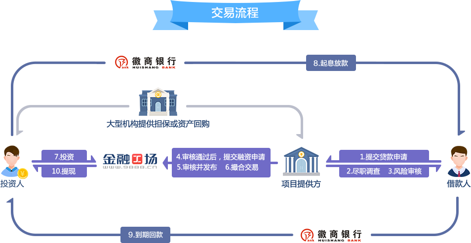
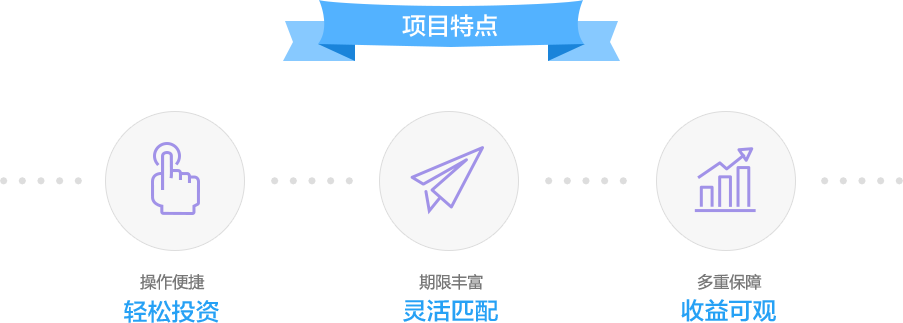
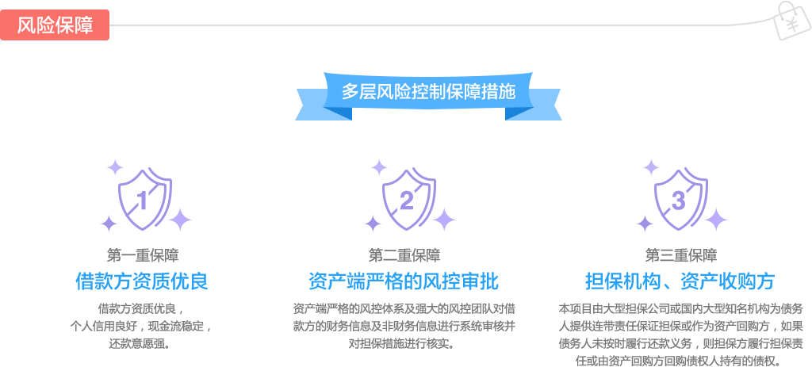
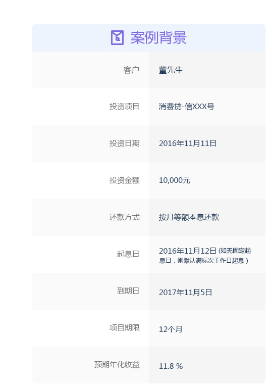
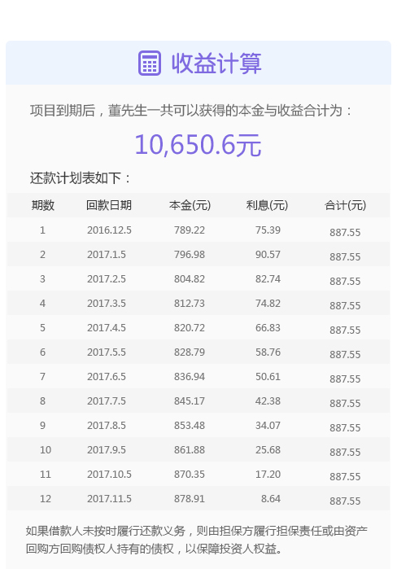
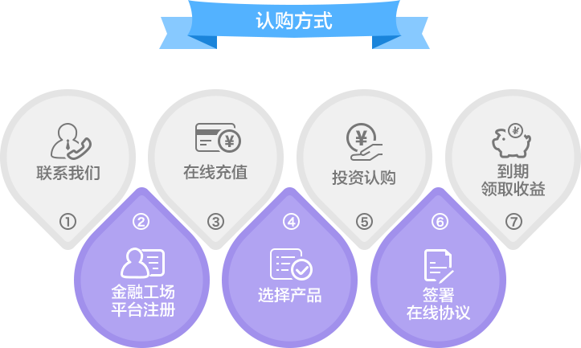
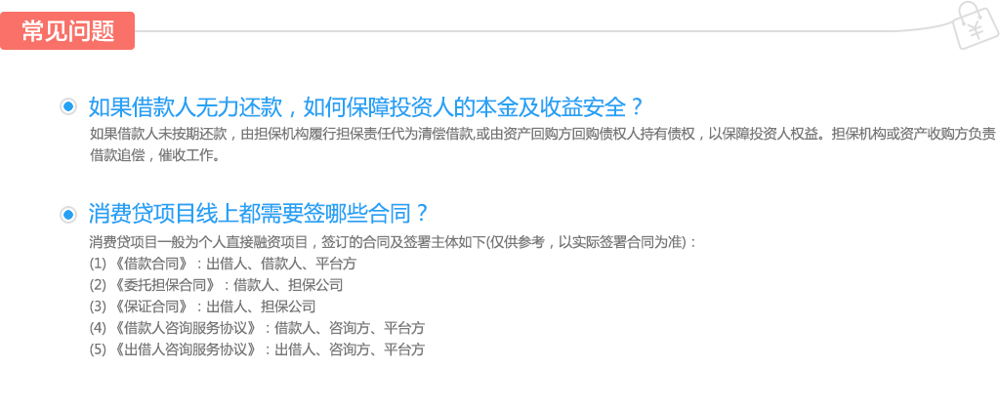

什么是消费贷?
“消费贷”系列项目是金融工场（www.9888.cn）推出的一款面向广大消费群体提供消费分期金融服务的产品。项目多为网信奇点、首山资产等资产提供方推荐。借款人资金多用于满足个人消费需求。本项目由金融工场向交易双方提供方便快捷的借贷信息撮合及居间
服务，借款人和出借人通过金融工场平台直接签订法律协议，明确双方的权利义务关系。本项目由大型担保公司或国内有资质的资产管理公司为借款人提供连带责任保证担保或作为债权资产回购方，如果借款人未按时履行还款义务，则由担保方履行担保责任或由资产回购方回购债权人持有的债权，以保障投资人权益。
消费贷的优势
还款方式为按月等额本息还款
借款期限为3个月—36个月
预期收益率高达9% --15%
起投金额仅100元





马上去投资
*若在规定募集期内未完成资金的募集，项目募集将自动撤销，资金将退回至出借人的徽商银行电子账户。

